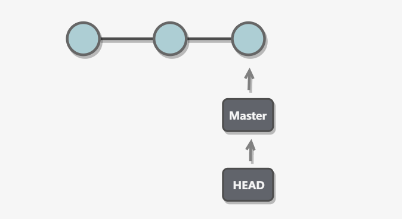
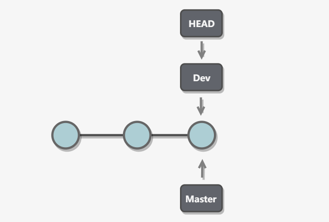
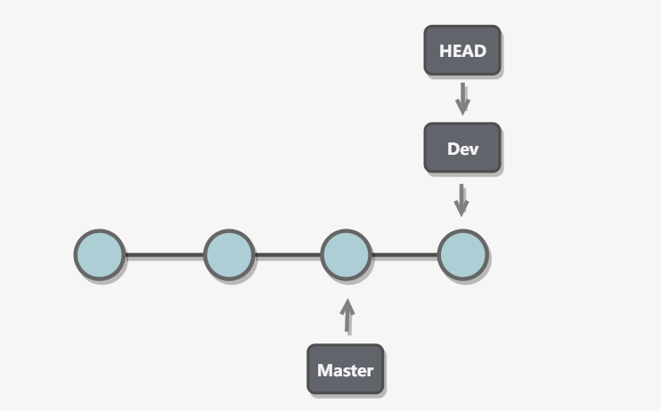
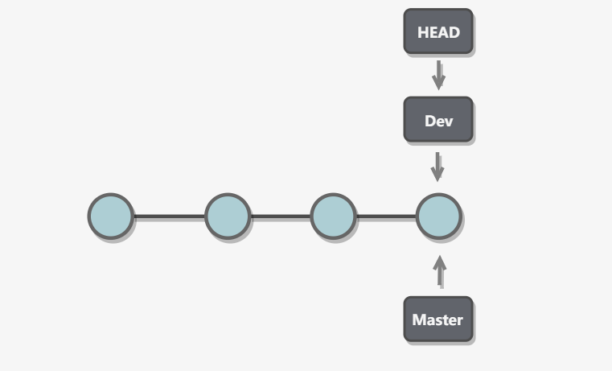
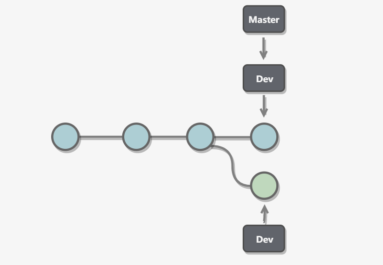
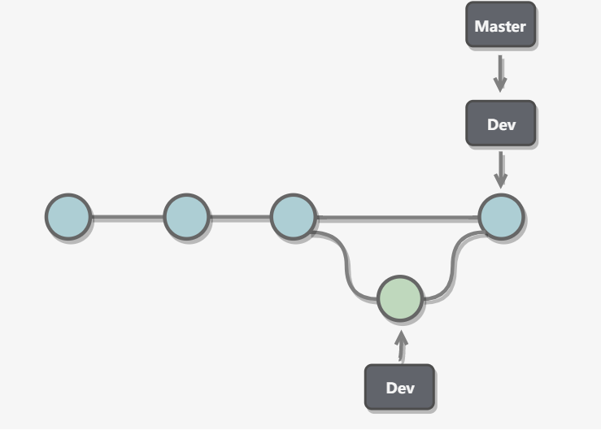
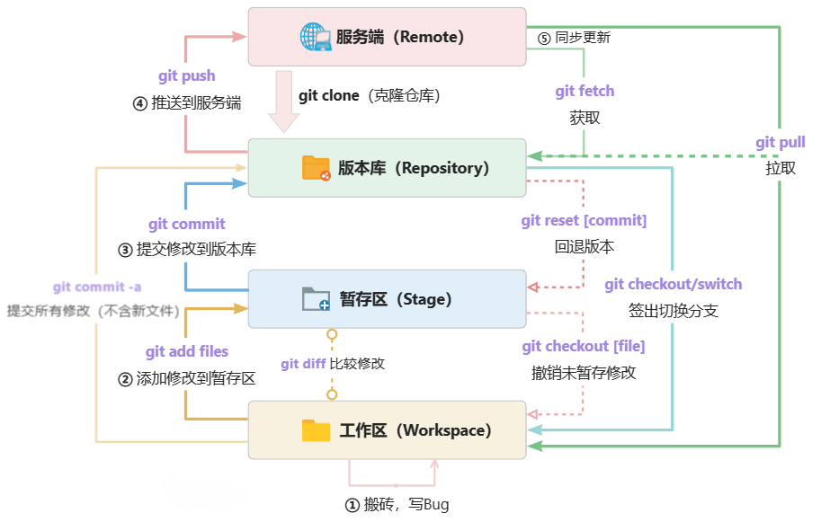

Git（1-基本概念）
Git 与 SVN
Git 属于分布式版本控制，而 SVN 属于集中式版本控制
- 集中式版本控制只有中心服务器拥有一份代码，每个开发者只能从中央服务器获取代码，并且提交修改也需要依赖于中央服务器；而分布式版本控制每个人的电脑上都有一份完整的代码，可以独立地进行开发和版本控制，在本地进行提交、分支、合并等操作
- 集中式版本控制有安全性问题，当中心服务器挂了所有人都没办法工作了，需要连网才能工作，如果网速过慢，那么提交一个文件会慢的无法让人忍受，新建一个分支相当于复制一份完整代码；而分布式版本控制不需要连网就能工作，新建分支、合并分支操作速度非常快
基本概念
| 概念名称 | 描述 |
|---|---|
| 工作区（Workspace） | 在电脑里能看到的代码库目录，新增、修改的文件会提交到暂存区 |
| 暂存区（stage 或 index） | 用于临时存放文件的修改，实际上它只是一个文件（.git/index），保存待提交的文件列表信息。 |
| 版本库/仓库（Repository） | Git 的管理仓库，管理版本的数据库，记录文件/目录状态的地方，所有内容的修改记录（版本）都在这里。 |
| 服务端/远程仓库（origin 或 remote） | 服务端的版本库，专用的 Git 服务器，为多人共享提供服务，承担中心服务器的角色。本地版本库通过 push 指令把代码推送到服务端版本库。 |
| 本地仓库 | 用户机器上直接使用的的的版本库 |
| 分支（Branch） | 分支是从主线分离出去的“副本”，可以独立操作而互不干扰，仓库初始化就有一个默认主分支 master。 |
| 头（HEAD） | HEAD 类似一个“指针”，指向当前活动分支的最新版本。 |
| 提交（Commit） | 把暂存区的所有变更的内容提交到当前仓库的活动分支。 |
| 推送（Push） | 将本地仓库的版本推送到服务端（远程）仓库，与他人共享。 |
| 拉取（Pull） | 从服务端（远程）仓库获取更新到本地仓库，获取他人共享的更新。 |
| 获取（Fetch） | 从服务端（远程）仓库更新，作用同拉取（Pull），区别是不会自动合并。 |
| 冲突（Conflict） | 多人对同一文件的工作副本进行更改，并将这些更改合并到仓库时就会面临冲突，需要人工合并处理。 |
| 合并（Merge） | 对有冲突的文件进行合并操作，Git 会自动合并变更内容，无法自动处理的冲突内容会提示人工处理。 |
| 标签（Tags） | 标签指的是某个分支某个特定时间点的状态，可以理解为提交记录的别名，常用来标记版本。 |
| master（或 main） | 仓库的“master”分支，默认的主分支，初始化仓库就有了。Github 上创建的仓库默认名字为“main” |
| origin/master | 表示远程仓库（origin）的“master”分支 |
| origin/HEAD | 表示远程仓库（origin）的最新提交的位置，一般情况等于“origin/master” |
工作区/暂存区/仓库
新建一个仓库之后，当前目录就成为了工作区，工作区下有一个隐藏目录.git，它属于 Git 的版本库，Git 的版本库有一个称为 Stage 的暂存区以及最后的 History 版本库，History 存储所有分支信息，使用一个 HEAD 指针指向当前分支

- workspace（工作区）：平时存放项目代码的地方
- index/stage（暂存区）：用于临时存放改动文件
- repository（仓库区或版本库）：安全存放数据的位置
- remote（远程仓库）：托管代码的服务器

- hexo 为项目目录，也就是 Git 工作区。
- 项目根目录下隐藏的.git 目录就是 Git 仓库目录了，存放了所有 Git 管理的信息。
- .git/config 为该仓库的配置文件，可通过指令修改或直接修改。
- index 文件就是存放的暂存区内容。
分支
分支实现
使用指针将每个提交连接成一条时间线，HEAD 指针指向当前分支指针

新建分支
新建一个指针指向时间线的最后一个节点，并让 HEAD 指针指向新分支，表示新分支成为当前分支

每次提交只会让当前分支向前移动，而其他分支指针不会移动

合并分支也只需要改变指针即可

分支冲突
当两个分支都对同一个文件的同一行进行了修改，在分支合并时就会产生冲突

Git 会使用 <<<<<<，=======，> >>>>> 标记出不同分支的内容，只需要把不同分支中冲突部分修改成一样就能解决冲突
1 | <<<<<<< HEAD |
快进式合并
直接将 master 分支指向合并的分支，这种模式下进行分支合并会丢失分支信息，也就不能在分支历史上看出分支信息，可以在合并时加上–no-ff 参数来禁用 Fast forward 模式，并且加上-m 参数让合并产生一个新的 commit，例如：git merge --no-ff -m “merge with no-ff” dev

工作流程
- 暂存（git add）：将需要进行版本管理的文件放入暂存区域。
- 提交（git commit）：将暂存区域的文件提交到 Git 仓库。
- 推送（git push）：将本地仓库推送到远程仓库，同步版本库。
- 获取更新（git fetch/pull）：从服务端更新到本地，获取他人推送的更新，与他人协作、共享。

- git commit -a 指令省略了 add 到暂存区的步骤，直接提交工作区的修改内容到版本库，不包括新增的文件。
- git fetch、git pull 都是从远程服务端获取最新记录，区别是 git pull 多了一个步骤，就是自动合并更新工作区。
- git checkout .、git checkout [file] 会清除工作区中未添加到暂存区的修改，用暂存区内容替换工作区。
- git checkout HEAD .、git checkout HEAD [file] 会清除工作区、暂存区的修改，用 HEAD 指向的当前分支最新版本替换暂存区、工作区。
- git diff 用来对比不同部分之间的区别，如暂存区、工作区，最新版本与未提交内容，不同版本之间等。
- git reset 是专门用来撤销修改、回退版本的指令，替代上面 checkout 的撤销功能。
提交规范
开发提交格式
1 | <type>(<scope>): <subject> |
参数信息
- type
| 功能 | 说明 |
|---|---|
| feat | 新功能、新特性 |
| fix | 修改 bug |
| perf | 更改代码，以提高性能（在不影响代码内部行为的前提下，对程序性能进行优化） |
| refactor | 代码重构（重构，在不影响代码内部行为、功能下的代码修改） |
| docs | 文档修改 |
| style | 代码格式修改，注意不是 css 修改（例如分号修改） |
| test | 测试用例新增、修改 |
| build | 影响项目构建或依赖项修改 |
| revert | 恢复上一次提交 |
| ci | 持续集成相关文件修改 |
| chore | 其他修改（不在上述类型中的修改） |
| release | 发布新版本 |
| workflow | 工作流相关文件修改 |
- scope：commit 影响的范围，比如：route，component，utils，build…
- subject：commit 的概述
- body：commit 具体修改内容，可以分为多行（或修改的涉及模块）
- footer：一些备注，通常是 BREAKING CHANGE 或修复的 bug 的链接
使用案例
1 | fix：修复bug |
本博客所有文章除特别声明外，均采用 CC BY-NC-SA 4.0 许可协议。转载请注明来源 爱编程的小生！
相关推荐

2024-12-14
Git（2-常用命令）
Git是一种常用的版本控制工具，常用命令包括git init（初始化仓库）、git clone（克隆仓库）、git add（添加文件到暂存区）、git commit（提交更改）、git push（推送到远程仓库）、git pull（拉取更新）、git branch（分支管理）和git merge（合并分支），帮助开发者高效管理代码版本。
2024-12-15
Git（3-IDEA使用）
在IntelliJ IDEA中使用Git，可通过内置工具完成版本控制。常用功能包括克隆仓库、提交代码、更改对比、分支管理和冲突解决。通过Version Control面板直观操作，例如提交更改、推送代码和切换分支。IDE支持图形化视图，使代码管理更加便捷高效，适合团队协作开发。
评论